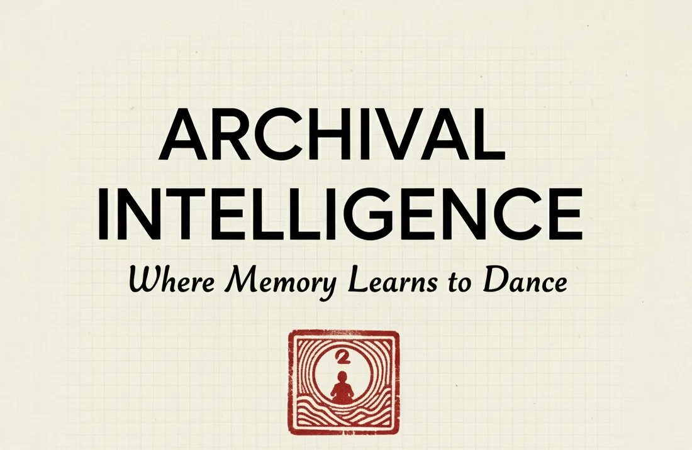
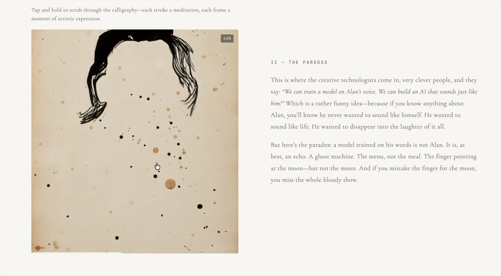

Where memory
learns to dance.
The interactive article behind the experiments asks how an archive can be restored, recontextualised and animated with care.

Published by 204.ai in collaboration with the Alan Watts Organization, September 2025.